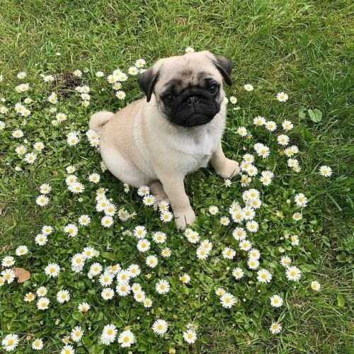
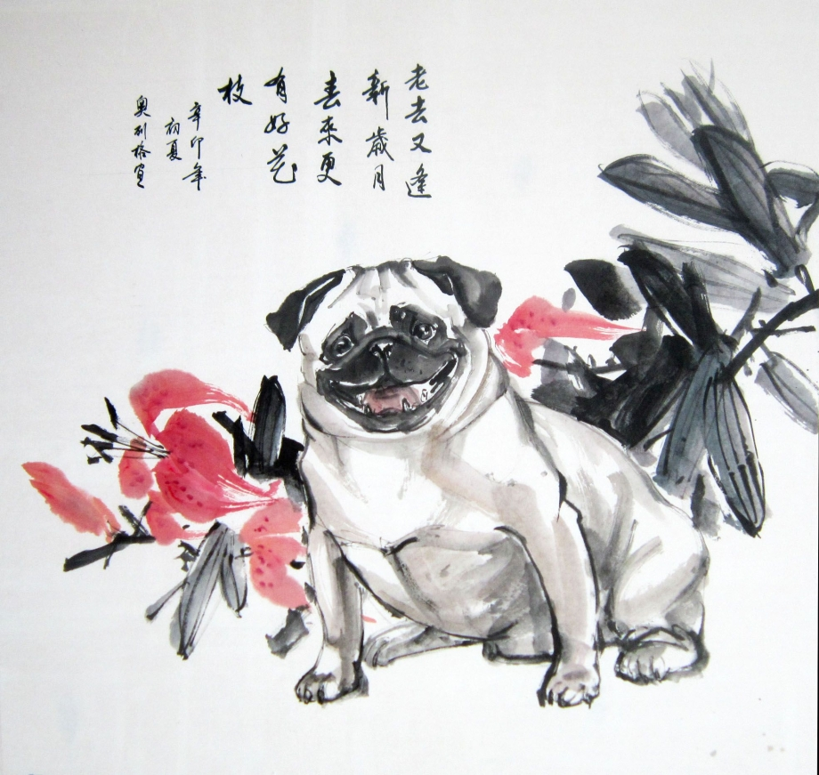
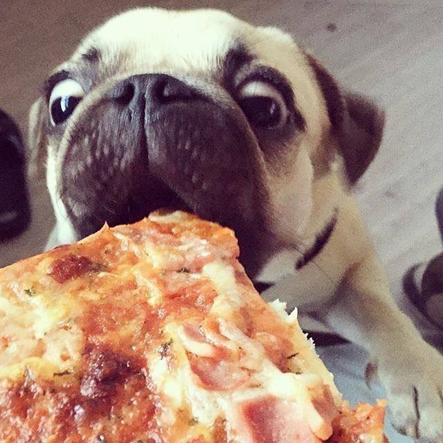
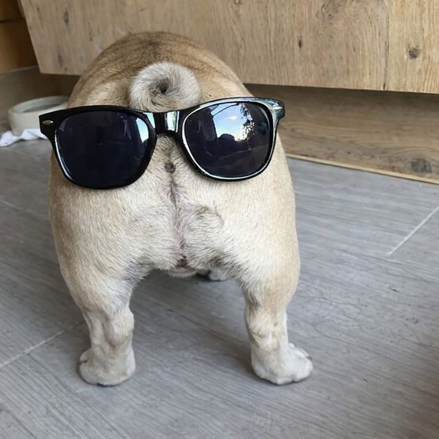

Этот сайт посвящен одной из самых очаровательных и древних пород собак — мопсам. Здесь вы найдете много интересной информации об их характере, особенностях ухода и сможете посмотреть забавные фотографии.
Мопсы — это маленькие собачки с большим сердцем. Они известны своими морщинистыми мордочками, закрученными хвостиками и невероятной преданностью своим хозяевам.

Немного историиДревний КитайПорода была выведена во времена династии Хань как компаньоны для императорской семьи и знати. Мопсы (тогда их называли «Ло Цзе» или «Сычуаньские пай») жили в огромной роскоши, а к некоторым собакам даже приставляли личную солдатскую охрану. Читать подробнее об истории породы... |
Императорский питомец:  |
|
Прибытие в ЕвропуГолландские купцы Ост-Индской компании привезли этих собак в Европу. Порода быстро стала официальным талисманом королевского дома Оранских в Нидерландах после того, как мопс по кличке Помпи спас принца Вильгельма Тихого от наемных убийц в военном лагере, вовремя подняв лай.
| ||
Какой у них характер?Это настоящие собаки-компаньоны. Они не созданы для охраны или долгих пробежек, их главная задача, быть рядом с человеком и дарить радость. |
|||
|
 |
Какие они?Дружелюбные: Спокойные: Умные, но хитрые: |
Мопсы в поп-культуреБлагодаря своей невероятной харизме и забавной мимике, мопсы часто становятся настоящими звездами экранов. Самые известные из них:
|
|
Интересный фактВы знали? Знаменитый хвостик мопса считается эталонным, если он плотно прилегает к спине и делает ровно два полных завитка! |
|||
Тот самый хвостик!
(Нажми, чтобы увеличить)

Сайт разработан в рамках учебного проекта. Для навигации используйте меню сверху.